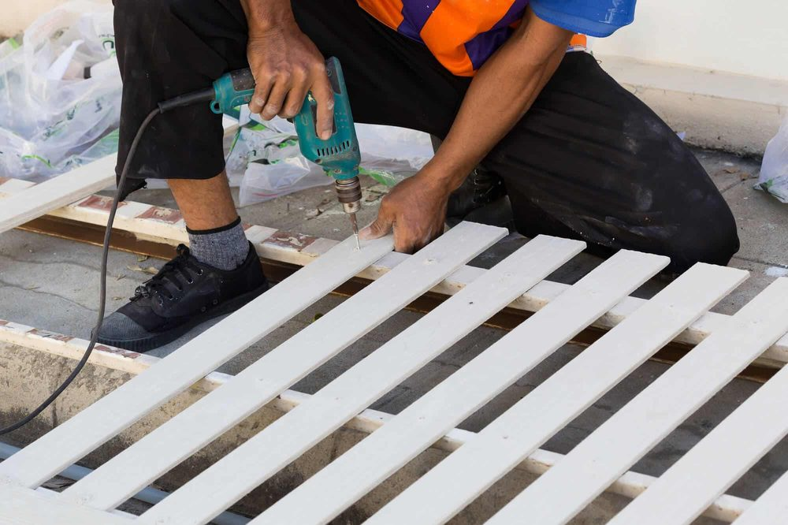

In This Guide
- A patio cover changes how a building looks from the street, so its style should match your architecture and your brand.
- Wrought iron, shade sails, market umbrellas, and slatted pergolas each create a different mood, budget, and level of upkeep.
- Different businesses use covered space differently: restaurants want dining comfort, retail wants a welcoming entry, and offices want a quiet spot to step outside.
- A stylish cover still has to be built well, so installation quality and simple upkeep protect the look you paid for.
Most people judge a business before they walk in. The entrance, the patio, and the shade over it all shape that first impression. A stylish patio cover gives you a chance to make it a good one.
Style only works when the structure underneath it is sound, so this guide covers both. It shows the main looks you can choose, how they fit different kinds of businesses, and what it takes to keep them looking good in the New Orleans climate. Big Easy Fence designs and builds commercial patio covers, and the ideas below reflect the choices most business owners face.
Start With the Building and the Brand
The best-looking cover looks like it belongs. Walk around your property and note the materials, colors, and lines you already have: brick or stucco, painted trim, arched windows, a flat roofline. Then think about your brand. A neighborhood bistro, a boutique, and a professional office each want to say something different, and the cover can help say it.
Two questions keep the design honest. What should a customer feel when they step under it? And what should it look like from the sidewalk? Answer those before comparing materials.
Four Looks Worth Considering
These are the styles business owners ask about most. Each one changes the character of the space in a different way.
Wrought Iron Frames
Scrolled or straight ironwork feels traditional and suits historic New Orleans buildings. It is durable but needs rust care.
Shade Sails
Stretched fabric in angled shapes looks clean and current. It is light, adjustable, and works well for casual spaces.
Market Umbrellas
Large umbrellas are the easiest way to add shade. They can be moved, closed for storms, and swapped for new colors.
Slatted Pergolas
Open slats cast patterned shade and give the space structure without closing it in.
If your building already has ironwork, matching it with wrought iron details at the patio edge ties the whole property together. If you want an open, garden-like feel, a pergola is a natural choice.
What a Stylish Cover Adds to Your Business
The right cover also changes how the space works, which is the practical payoff of good style.
More Usable Outdoor Space
A patio with a cover becomes an outdoor room. It gives customers somewhere to sit, wait, or meet, and it gives you more square footage without a building addition.
Relief From Sun and Heat
Shade is what makes summer seating possible. A cover that blocks direct sun makes the space usable in the middle of the day, when an open patio would sit empty.
A Reason to Stop and Look
A distinctive cover gets noticed by people walking or driving past. It signals that the business cares about detail, which can matter to a first-time visitor deciding where to stop.
How Different Businesses Use Style
The same cover does different work in different settings.
Restaurants and Cafes
Comfort and mood come first. Warm materials, good lighting, and enough shade help guests linger, which is exactly what a dining patio needs.
Retail Storefronts
Here the cover works as a welcome. A covered entry or sidewalk display keeps browsers dry and draws attention to the merchandise.
Offices and Professional Suites
A shaded seating area gives employees and visitors a pleasant place to step outside, and a well-kept cover signals a well-run business.
Details That Finish the Look
Once the frame is chosen, small details do a lot of the styling. Paint or powder-coat color should pick up something already on the building. Lighting under the cover should be warm and low, so the space glows after dark instead of glaring. Furniture, cushions, and planters can carry your brand colors and be swapped out when you want a change. Keep the palette simple, with one main color and one or two accents, and the cover will look intentional instead of busy.
Where Looks Meet Structure
You might be tempted to build a cover yourself, but there is a lot that can go wrong: footings, anchoring, and connection to the building all affect safety in strong wind and heavy rain. An experienced crew makes sure the cover looks good on day one and stays sound afterward.

Whether you choose an iron frame for an upscale look or shade sails for something casual, the installation should follow the manufacturer's requirements and account for local wind. Ask how the cover will be anchored and what happens when a hurricane warning is issued.
Keeping the Look Fresh
A stylish cover loses its appeal if it looks neglected. The good news is that upkeep is simple.
- Rinse regularly. Soapy water removes dirt and pollen and keeps finishes bright.
- Watch for rust. Iron and steel need a quick look each season, with chips touched up before they spread.
- Clear standing water. Puddles and clogged drains attract mosquitoes and make outdoor seating unpleasant.
- Inspect after storms. Check fabric, fasteners, and anchors after strong wind.
Taking the Next Step
Pick the look that suits your building, decide how much upkeep you are willing to take on, and bring photos of the space to the conversation. Big Easy Fence can turn that into a design and a free estimate for your commercial property.
Ready to Update Your Outdoor Look?
Show us the building and the style you like. We will help you match a cover to your space and your budget.